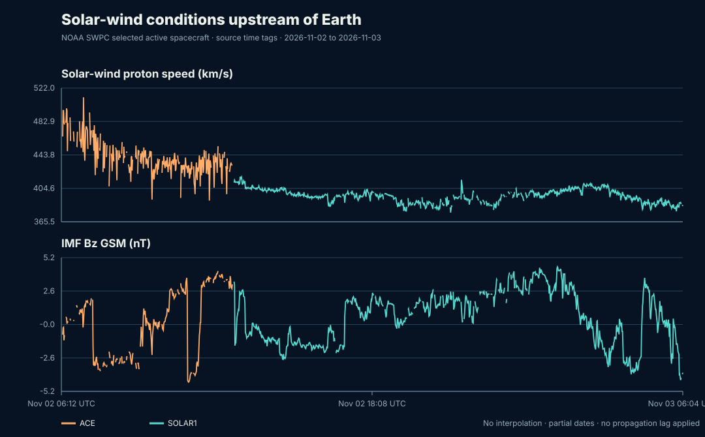

Solar-wind Explorer
One-minute NOAA SWPC plasma and magnetic-field measurements, paired only when the selected primary spacecraft and unchanged source time tag match.
Measured upstream conditions
NOAA SWPC uses in-situ solar-wind measurements from spacecraft upstream of Earth. The sample crosses an active-spacecraft switch; color identifies spacecraft. Data gaps remain visible and are not interpolated.

Partial UTC-day summaries
Daily bins below count paired minutes against 1,440 possible minutes. The rolling source window does not cover whole UTC days. Kp is shown only when the archived daily source has all eight estimated three-hour intervals; it is day-level context and has not been time-shifted to match solar-wind arrival at Earth.
| UTC date | Paired coverage | Active source samples | Median speed (km/s) | Median density (cm⁻³) | Minimum Bz GSM (nT) | Estimated Kp daily max |
|---|---|---|---|---|---|---|
| 2026-11-02 | 740 / 1,440 (51.4%) | ACE: 267, SOLAR1: 473 | 400.600 | 1.690 | -4.530 | 3.000 |
| 2026-11-03 | 291 / 1,440 (20.2%) | SOLAR1: 291 | 398.000 | 1.530 | -4.370 | partial/withheld |
How to read this sample
The plasma and magnetic-field feeds are separate files and may select spacecraft independently. This release pairs records only when time_tag and source are identical and both are marked active: true. Other spacecraft records stay available in the raw snapshots. Quality fields remain present; this descriptive compilation does not assign undocumented quality thresholds.
The records are measured upstream, at spacecraft locations near the Sun–Earth line. No propagation delay is applied. A same-time or same-date association with geomagnetic Kp is not a causal test or forecast.